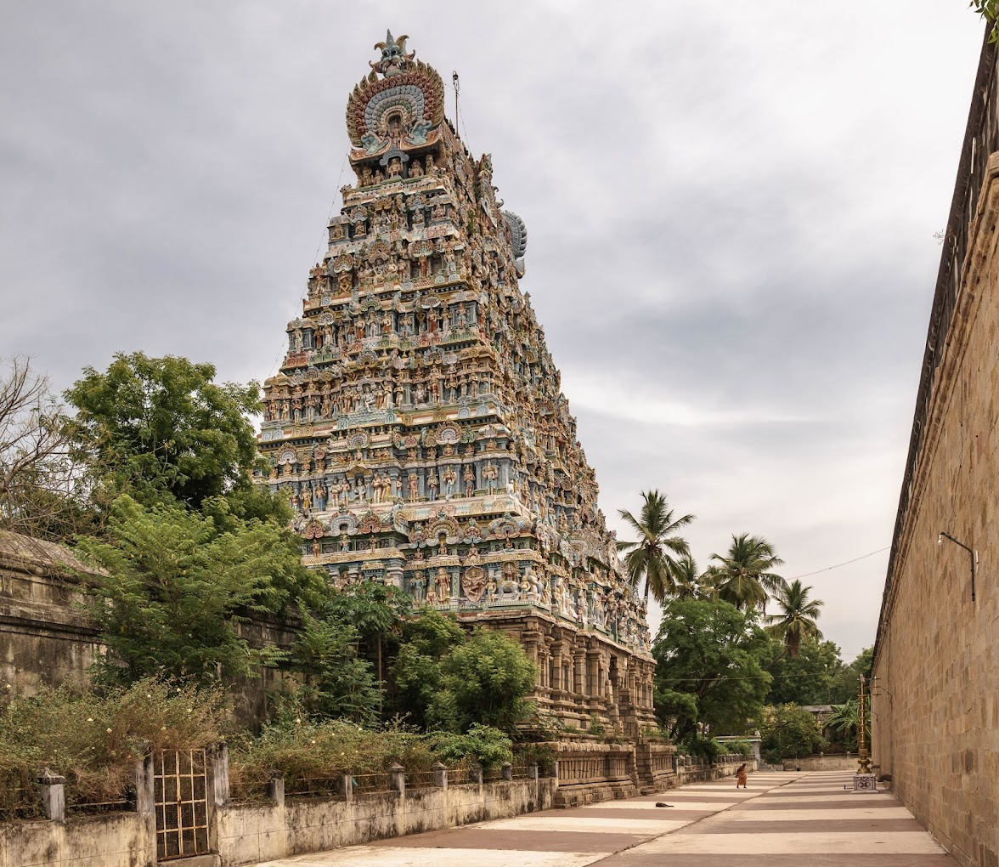
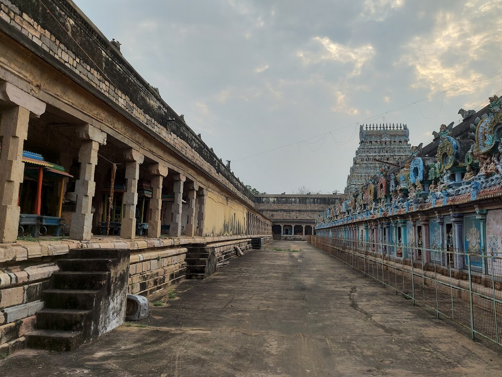
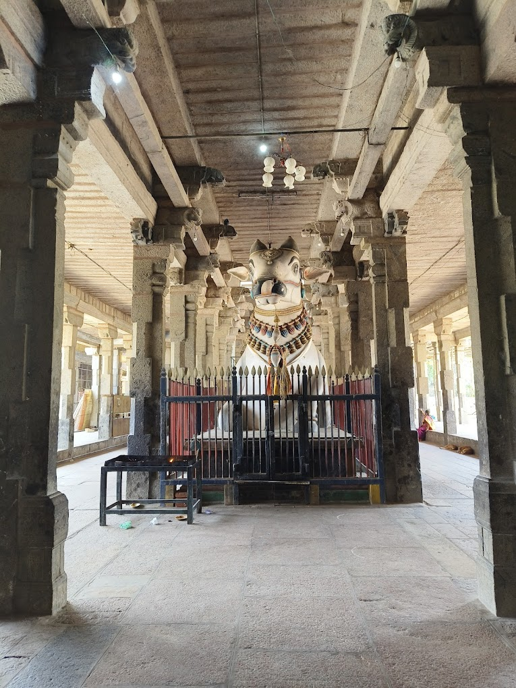

HISTORY OF THE TEMPLE

LEGENDS

INSCRIPTION
ARCHITECTURE
FEATURES OF THE TEMPLE
HISTORY OF TEMPLE
- There are 149 inscriptions associated with the temple indicating contributions from Pandyas, Cholas, Thanjavur Nayaks and Thanjavur Maratha kingdom
- The oldest parts of the present masonry structure were built during the Chola dynasty in the 9th century
- while later expansions, including the towering gopuram gatehouses, are attributed to later periods, up to the Thanjavur Nayaks during the 16th century.
LEGENDS
- Shiva is believed to have appeared as a flame to please Agastya and other sages who were performing penance.
- Shiva (Rudra) is said to have emanated from the heart of Mookambika.
- It is also believed that several other deities like Vinayaga, Murugan, Parvathi, Kali, Lakshmi, Saraswathi, Brahma, Airavata (the elephant of celestial king Indra) and Vishnu worshipped Mahalingaswamy.[7]
- According to legend, the site of the temple at Thiruvidaimarudur has been used for over 2,000 years and is associated with the Pandya king Varaguna Pandian.
- The temple contains inscriptions of the Hoysala kings and some Vijayanagara grants, and many records of the later Nayaks and Marathas.
- There are a total of 149 inscriptions associated with the temple.[7] According to legend, the site of the temple at Thiruvidaimarudur has been used for over 2,000 years and is associated with the Pandya king Varaguna Pandian.
- The temple contains inscriptions of the Hoysala kings and some Vijayanagara grants, and many records of the later Nayaks and Marathas.
- The inscriptions in the walls of the temple are from Kulothunga Chola I indicating revenue survey and settlement and other additions made inside the temple.
- This inscription (No. 32 of 1895) on the second precinct records a grant of 120 sheep for two lamps and the pujaris and inhabitants are appointed trustees of the grant.
- The date is the 172nd day of 26th year of the reign of Kulothunga I, who conquered the Kalinga region.
- The other inscriptions mention the name of the queen and adore her as the "mistress of the whole world". Three other queens, Dinachintamani, Elisai Vallabhi and Tyagavalli.
INSCRIPTION
- The temple is also famous historically for devadasi tradition, which involves donating dance women to the temple during the medieval period.
- The inscriptions indicate the tradition, dances, rearrangement during festivals and procession of deities during festivals.
- The record is dated in the seventh reignal year of Vikrama Chola (1118-35 CE).
- There are five inscriptions in this vein from the 10th century and there are three later inscriptions date 1123 CE, 1142 CE and 1218 CE.
- The possible reasoning for the hundred-year gap indicates the shifting of all temple women to Brihadeeswarar temple by Rajaraja I.
- Since the temple received lot of gifts, the Cholas deputed a special army to protect the endowments.
ARCHITECTURE
- Mookambigai Amman shrine.[7] The temple was widely expanded during the Nayak period in the 16th century with the development of twin Mahalinga and Devi shrines.
- The shrines of Muruga and Nataraja are enshrined in the spaces between the pier. There are other shrines for Padithurai Vinayagar and Agora Veerabadrar.
- The three precincts are called Aswametha Pradakshina, Kodumudi and Pranava. The Vinayagar in the Southern side is called Anda Vinayagar and as per Hindu legend, the Vinayagar ruled the world and hence obtained the name.
- Pranava precinct has lot of sculptures dating back to the Nayak period of the 16th century. One of the notable among them is the sculpture of a chariot having twelve pillars, each denoting the twelve lagnas.
- In the northern portion of Kodumudi precinct, there is an image of Chokkanathar.
FEATURES OF THE TEMPLE
- Vaigasi (May). 63 Nayanmar Ula and Aruthra Darshan( like in Chidambaram) are the other two important temple festivals.
- There are 27 star lingas, the prince "Ammani Ammal" Vigragam and Chitra prakaram(enclosed precincts of a temple) which is full of painting
- There are several charitable trusts, one of them being "Pachhiyappa Mudhaliyar ArakattaLai".